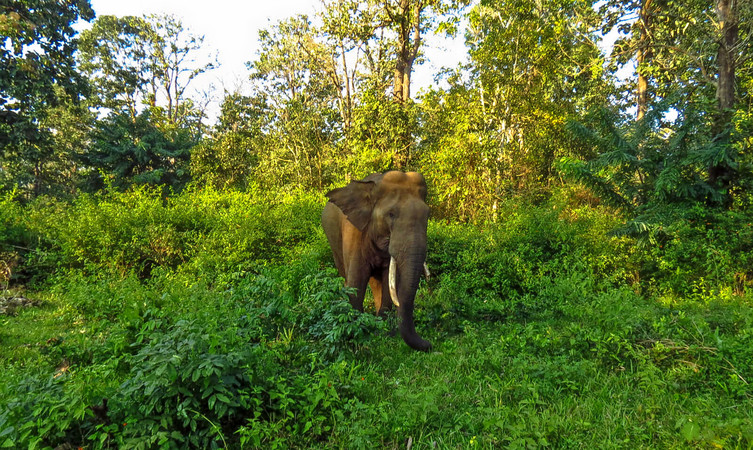

The Green Paradise
Wayanad is a rural district in Kerala state, southwest India. In the east, the Wayanad Wildlife Sanctuary is a lush, forested region with areas of high altitude, home to animals including Asiatic elephants, tigers, leopards and egrets. In the Ambukuthi Hills to the south, Edakkal Caves contain ancient petroglyphs, some dating back to the Neolithic age.
Top Destinations

Chembra Peak
A trekking paradise, Chembra is the highest peak in the Wayanad Hill Range that will take your breath away. Encompassed by verdant greenery of the Western Ghats, Chembra Peak is one of those attractions in Wayanad that one just cannot ignore for its mesmerising views.

Banasura Sagar Dam
One of the most spellbinding places to visit in Wayanad, Banasura Sagar Dam is a picturesque tourist hotspot. Known for being India’s largest earthen dam, it boasts of extensive natural beauty with beautiful flora and fauna, majestic hills and mesmerising waterfalls. The Banasura Sagar is a photographer’s delight and offers the most beautiful views from the top of the hill.

Kuruva Island
Located in the middle of Kabini river, Kuruva Island is a natural paradise that is replete with diverse flora and fauna in the most beautiful surroundings. It is blessed with evergreen forests all around that makes it a mesmerising picnic spot away from all pollution and noise of the city.

The Bamboo Factory
If you wish to know how bamboo constitutes an important factor in both the lifestyle and livelihood for the people in Wayanad, then a visit to The Bamboo Factory comes highly recommended.This educating and inspiring experience gives a sneak peek into the lives of the locals in Uravu.

Jain Temple, Sulthan Battery
One of the most beautiful heritage sightseeing places in Wayanad, Jain Temple is known for its interesting history. It was built in 13th century A.D. and largely came to prominence when this ancient temple was used by Tipu Sultan to store ammunition.

Pookode Lake
Pookode Lake should incite your curiosity. Surrounded by the evergreen beauty of Western Ghats and verdant forests, Pookode Lake is a gorgeous freshwater lake.

Tholpetty Wildlife Sanctuary
It is famous for harbouring a diverse number of flora and fauna. Taking a wildlife safari is the most thrilling activity that one should undertake at Tholpetty Wildlife Sanctuary to make their Wayanad vacation memorable.

Edakkal Caves
Travel back in time to the Stone Age with a visit to Edakkal Caves that are located on the Ambukuthi Hills. Edakkal literally translates to ‘a stone in between’ and this cave and showcases a natural masterpiece.
Lakkidi View Point
Famous for its mesmerising scenery, Lakkidi View Point is known for its nine hairpin caves and offers a resplendent view of the mountains in Wayanad. The whole trip of Lakkidi View Point promises an unforgettable charm of natural beauty that should add to their bucket list of attractions in Wayanad.

Meenmutty Waterfalls
One of the delightful of Wayanad tourist places, Meenmutty Waterfalls is a three-tiered waterfall that will take your breath away. A scenic trek through the lush green forest from the Wayanad-Ooty Road leads up to this picturesque natural wonder.